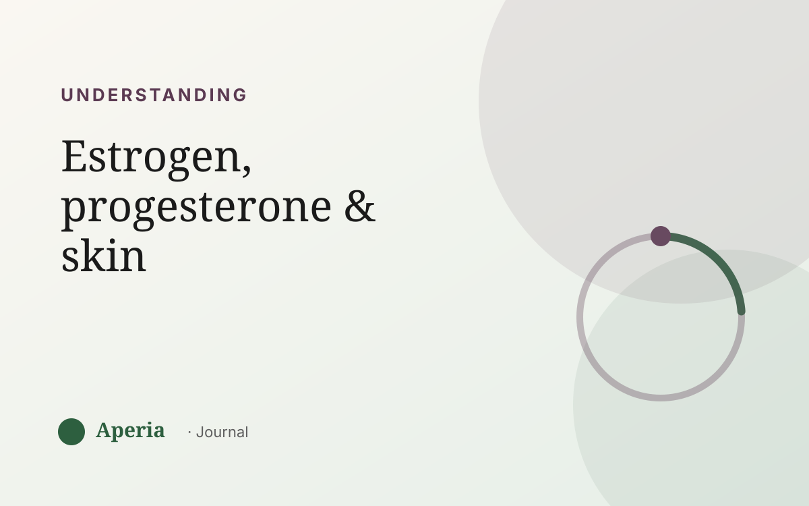

Understanding
Estrogen, progesterone and your skin, explained
If your skin has a monthly rhythm, two hormones are doing most of the conducting: estrogen and progesterone. You don't need a biology degree — just a feel for what each one does and when it's in charge.
Estrogen: your skin's good-weather hormone
Estrogen rises in the first half of your cycle, after your period. It's associated with skin looking its best — more hydrated, plumper, calmer. That's why a lot of people feel clearest and glowiest in the week or so after their period, when estrogen is climbing.
Progesterone: the second-half shift
After ovulation, progesterone becomes more prominent in the cycle's second half. This is the stretch when many people notice skin gets oilier and more breakout-prone, especially on the chin and jaw, building toward the days before their period.
Your best skin week and your flare week aren't luck — they're two different points on the same hormonal wave.
The testosterone cameo
There's also a small amount of testosterone in the mix. It's linked to oil production, and when the overall hormonal balance tips in the second half of the cycle, its influence on the oil glands can be part of why breakouts appear then.
The takeaway: it's a rhythm, not a flaw
The most freeing thing to understand is that none of this is a personal failing. Your skin is responding to a rhythm that rises and falls every single month. The spots that show up in your flare week aren't a sign you did skincare wrong — they're a phase of the wave.
See your own rhythm
Because everyone's balance is a little different, the useful move is to watch your own. Aperia tracks your skin by zone next to your cycle, so the estrogen ‘good week’ and the progesterone-heavy ‘flare week’ show up as your pattern, with dates attached.
Common questions
Does estrogen improve your skin?
Estrogen is associated with skin looking more hydrated, plumper and calmer, and it rises in the first half of the cycle — which is why many people feel their skin is clearest in the week after their period.
Does progesterone cause acne?
Progesterone becomes more prominent in the second half of the cycle, the stretch when many people notice more oil and breakouts. It works alongside the overall hormonal balance rather than causing acne single-handedly.
When is estrogen highest in the cycle?
Estrogen climbs through the follicular phase and peaks around ovulation, roughly the middle of your cycle — often overlapping with people's best skin days.
Why does my skin change so much across the month?
Because estrogen and progesterone rise and fall in a wave across your cycle, and skin responds to that shifting balance — calmer when estrogen leads, oilier and more breakout-prone in the progesterone-heavy second half.
See your own skin pattern
Track your skin and your cycle together. Free to start.
Download on the App StoreAperia is a self-knowledge tool, not a medical service. It helps you understand and track your skin; it doesn't diagnose, treat or cure anything. If you're concerned about your skin, talk to a qualified professional.